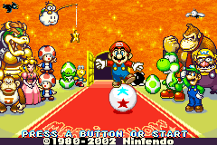

Game & Watch Gallery 4 (USA)
SRAM 256K Save Format Spec gbakit Built-In 💾 MultiBoot 🎮 4P Link
Cartridge Identity
- Game Code
AQWE(FamilyAQW)- Header Title
G&W GALLERY4- Maker / Revision
01/ rev0- ROM Size
- 4.0 MiB (4,194,304 B)
- Save Media
SRAM 256K- SHA-256
8166a4d8a307999d8d37843a9b7ebc9cfbc18bd2a4376b2832daa08104ccb6ee- Engine / SDK Group
comm-011(32 families)
Screenshots

Link Cable & Multiplayer Communications
This title contains detected communication capabilities: 💾 MultiBoot 🎮 4P Link.
Detailed protocol specifications, SIO registers, Joybus commands, and MultiBoot sequences are documented in the Link & Multiplayer Reference.
- Multi-Player SIO (4P)
- 16-bit ring network · SIOCNT (
0x04000128) literals:0x01517c,0x0151d8,0x0155a4· SIODATA32/SIOMULTI0 (0x04000120) literals:0x015298,0x0152fc,0x015368 - Single-Cart MultiBoot
- Single-Cartridge MultiBoot (Download Play) client/server handler · Thumb SWI 0x25 (
0xDF25):0x050658,0x0c3e16,0x129aee,0x1300ae
Battery Save Format Specification
Open Full Save Format SpecDownload Sample .sav (32,768 B)Download save-format.json
- Specification Coverage
- 20 mapped fields · 1 verified checksum(s) · Confidence: MEDIUM
- gbakit Built-In Support
- Built-in (AQWE)
gbakit save verify AQWE save.sav
gbakit save decode AQWE save.sav
gbakit save fix AQWE damaged.sav -o repaired.savObserved Battery Save Layout
- Fill Byte & Active Size
0xFFfill · 280–280 / 32,768 B active (entropy 0.59 bits/B)- Active Offset Ranges
0x0–0xF,0x328–0x42F(2 total)- ASCII Magic / Headers
GBGforAGB 0.9.- Observed Variable Regions
- 5 bytes across 4 spans:
0xE–0xF,0x35D,0x384,0x389 - Candidate Checksum/Counter Spans
0xE–0xF,0x35D,0x384,0x389- Integrity Check
- Confirmed at
0xE
Text, Fonts & Scene Data
- Primary Text Encoding
- LZ77-compressed ASCII · custom 1-byte charmap (base 'A' = 0xa1) (
8ASCII strings ·1Shift-JIS runs ·2LZ77 ASCII blocks) - Font & VWF Indicators
- VWF Width Table 1bpp Font · BIOS SWIs: BitUnPack
0x10:18· LZ770x11/12:27· Huffman0x13:19· RLE0x14/15:20 - Scene & Packaging
56ROM pointer tables (≥32 entries,3≥200) ·0relativeu32TOCs ·300OAM metasprite hits
Hardware MMIO Subsystems
dma_transfer0x80000f4ppu_display0x8016c68save_bus_sram_flash0x803fd90,0x803fdd0
Regional Variants & Revisions (Family AQW)
- Game & Watch Gallery 4 (USA) (Virtual Console) (
AQWE, 4 MiB) - Game & Watch Gallery Advance (Europe) (
AQWP, 4 MiB) - Game & Watch Gallery Advance (Europe) (Virtual Console) (
AQWP, 4 MiB) - Game Boy Gallery 4 (Japan) (Virtual Console) (
AQWJ, 4 MiB)